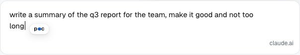
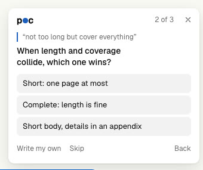
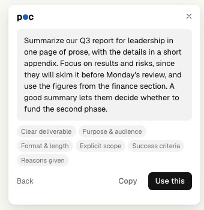

Sharper prompts, in your chat box.
POC stands for Prompt Optimization Coach. It asks up to three quick questions about your draft, then writes a clearer prompt back into the box.
Free and open source (MIT). Version 0.4.0, a beta you load by hand.
Works on the AI chat sites you already use.
- ChatGPT
- Claude
- Gemini
- Google AI Studio
- Microsoft Copilot
- Perplexity
- Grok
- DeepSeek
- Le Chat
- Poe
- Meta AI
- Kimi
- Qwen
- T3 Chat
- HuggingChat
- OpenRouter Chat
It stays out of Gmail, Google Docs and search bars. Also runs in Edge, Brave and Arc.
You ask for it. It asks you back.
-

Write your draft
Hover the blue dot that follows your cursor, or press Cmd+Shift+P. POC never speaks unless you ask, and nothing reaches the AI until you click Coach this draft.
-

Answer a few questions
Up to three, one at a time, all multiple choice. They ask only about what you know and the draft does not say, such as who it is for and what matters most.
-

Use the rewrite
Click Use this and the sharper prompt is written back into the chat box. Copy it instead if you prefer. Then send it yourself.
Free on your computer. Or bring your own key.
POC has no account and no subscription. You pay a provider directly, per use, or nobody at all.
Ollama
The default. Runs models on your own machine, so your text never leaves it.
FreeGoogle Gemini
Strong results. Your text goes to Google.
Free tierAnthropic
Claude models with your own API key. Your text goes to Anthropic.
Pay per useOpenAI
GPT models with your own API key. Your text goes to OpenAI.
Pay per useAnything else
LM Studio, OpenRouter, Groq, or any OpenAI-compatible server.
Varies
Your key stays on your computer.
POC has no server of its own. Your draft goes only to the provider you chose.
The key never leaves the browser
Your API key is saved in your browser's local extension storage. There is no POC backend to send it to.
Nothing is sent until you click
POC does not read or upload what you type in the background. The draft is sent only when you click Coach this draft.
Fully local if you want it
With Ollama, the whole round trip happens on your machine. With a cloud provider, your draft is sent to that provider under its own terms.
Open source, MIT
Read every line on GitHub.
Install it in about a minute.
POC is not on the Chrome Web Store yet, so you load it by hand. That is a few clicks in Chrome.
- Download and unzipKeep the folder somewhere permanent. Chrome loads it from there every time.
- Open chrome://extensionsType it into the address bar.
- Turn on Developer modeThe switch is at the top right.
- Click Load unpackedChoose the unzipped folder, the one with
manifest.jsondirectly inside. - Follow the setup pageIt opens by itself and helps you pick Ollama or a key.
A Mac app is in beta.
The same coaching in any app: select text, press Control+Option+P. It is not released yet, so for now the Chrome extension is the way in.